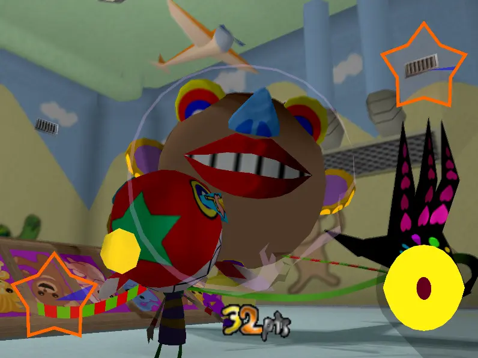
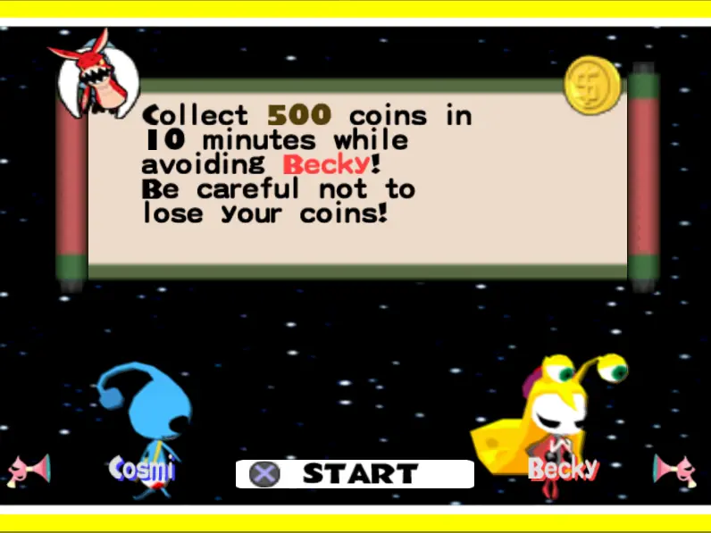
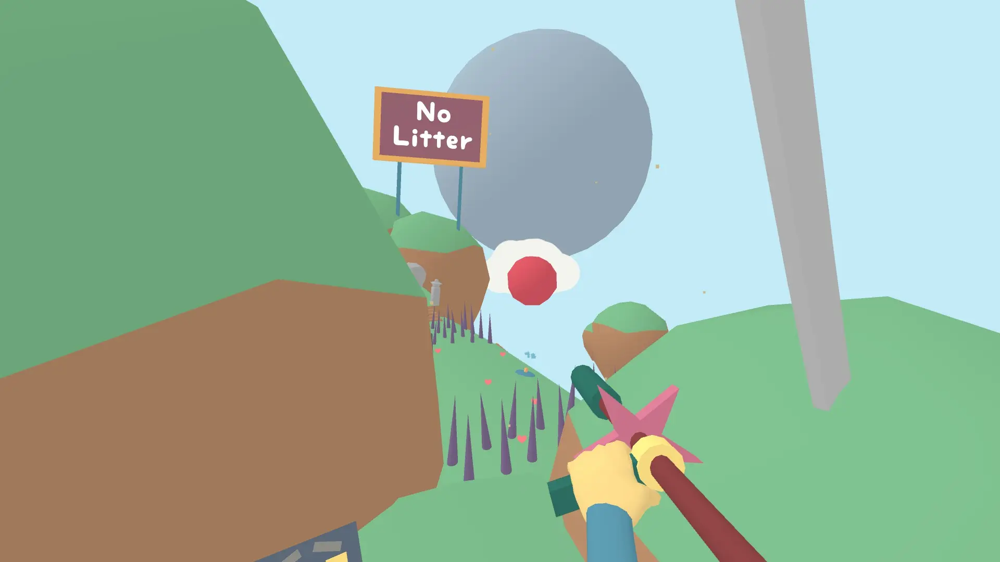

GrekTech
GrekTech


What games are on my memory card? Take a look
Penko Park |
Stretch Panic / Freak Out |
Under the Skin |
Yume Nikki |
Lovely Planet |
We Were Here |
-
Penko Park
October 23, 2020Inspired by Pokemon Snap, Penko Park takes on a creepier tone than the cult classic. Rather than coming across as a knock-off, it presents as its own take on the formula. You take photos of creatures in an on-rail ride through various themed parks, but here photos are graded immediately as they are taken with a simpler rating system based on proximity. Instead of maximizing scores for each creature, they instead have multiple expressions/poses that you'll want to get 3-star pictures of.
There are upgrades that you obtain through leveling up - receiving xp for every type of photo taken - but the upgrades are a linear path even though you get to 'choose' the upgrade each time. It would be more interesting to pick the upgrade I receive each time, though it would need to allow for any upgrade path to be viable. Along with familiar upgrades like a flute to play music or a ball to pester creatures with, there is a grapple hand you can use to pick up artifacts, and an upgrade that allows you to enter a spirit realm upon touching spirit markers throughout the level, allowing for some new photos.
While I still prefer Pokemon Snap overall, Penko Park is a good game in its own right and boasts a more casual experience, with maybe more appeal for completionists. While completing it I wrote a 100% Completion Guide, which was a lot of work but is useful in getting some elusive pics.
-
Stretch Panic / Freak Out
ひっぱリンダ
July 27, 2001A strange 3D game consisting of boss fights, with the primary gimmick of a scarf that can stretch anything. Each boss has a weakness you can exploit to deal heavy damage. To fight bosses you must collect points by entering EX levels and defeating busty women. Aside from simply defeating every boss, you will want to exorcise each boss by performing a special move using both sticks.
While coming across as more of a tech demo than a fully-fledged experience, it does a great job on the main attraction - the boss battles - while forgoing traditional levels/platforming in-between.
 -
Under the Skin
めいわく星人 パニックメーカー
August 5, 2004As an alien arriving to Earth, you're tasked with playing pranks on humans to prove your mischief skills against rival aliens. "Playing pranks" mainly consists of dealing damage with a variety of weapons, or laying a trap. Humans who have been pranked will form a mob and chase you, which you can either use to your advantage by grouping them up and racking up a bunch of money, or mitigating by disguising as someone else. In your alien form you're vulnerable and will lose money when hit. Each human has specific weapons in their inventory that you acquire when disguising as them, encouraging you to pick and choose your target while avoiding enemies. Each stage has a 'Panic Time' with an associated gimmick, such as containing a boss enemy or an event that requires you to disguise as a certain being to avoid taking damage.
The game can be a bit repetitive overall, you're doing the same thing over again aside from unique weapons/stage gimmicks in each level. As far as multiplayer I'm sure its a neat game to play once or twice, but probably not a main-stay to come back to often.
 -
Yume Nikki
ゆめにっき
June 26, 2004You play as Madotsuki, a mysterious girl who by sleeping in her bed can explore a surreal world of dreams. Inside the dream world are 'effects', each changing Madotsuki's appearance and giving her special abilities such as increasing her speed or allowing her to attack dream denizens. All of these effects (except one) can be acquired in any order. Upon collecting all of the effects, an ending can be triggered.
Despite the mystery surrounding the author (who is known to us only by alias), the game has accrued a decent cult following over the years. You have probably seen characters from this game elsewhere. Other works have cited Yume Nikki as inspiration, such as Dreaming Sarah and Crypt Worlds. A common comparison is LSD: Dream Emulator, an older PlayStation game with a similar premise.
I would recommend exploring the game blind, then looking at a walkthrough or outside source to assist in finding the remaining effects. As ideal as it would be to complete the game completely blind, the dream world is vast and some effects can be difficult to find.
-
Lovely Planet
July 31, 2014First-person shooter speedrun, clear the red enemies and reach the end of the level. Has a 3 star system for completing, completing within a time, and 100% accuracy. Challenging in later levels, especially if going for 3 stars, but will vary depending on FPS game experience. May be slightly too challenging for those who haven't played FPS games religiously.
Fairly one-note in its cutesy environment and aesthetic, but does have new enemies/obstacles in the later levels.
-
We Were Here
February 3, 2017You and a partner must escape an abandoned castle by solving puzzles - but you're both separated and can only communicate via a walkie-talkie. This one is free but shorter than the sequels, and may be a bit buggier as well.
Lacks replay value by nature, but can be played through again by switching sides for a different perspective. Would recommend finding a good friend to play with instead of rolling the dice on a random, but its an option.
Gives an accurate impression of the sequels, worth trying first.
More Soon...